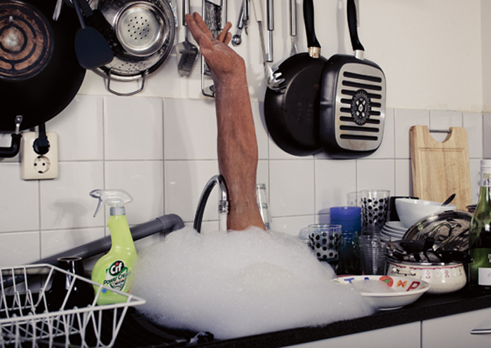
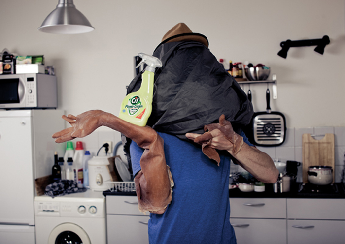
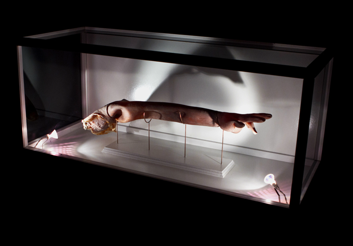

Oracle
(Victor Zwiers)
I was hired by Dutch artist Victor Zwiers as a programmer and technical consultant for his project: Orcale.
"Oracle is an interactive sculpture that reacts on the presence of its audience. It tries to incorporate the audience into the work of art by tracking a member of the audience and projecting a video on them. The sculpture follows the participants movements and keeps projecting video until they are out of its range, forcing the participant to be part of the art work. The sculpture becomes the artist, the participant becomes its canvas."
This was achieved using Kinect, OpenNI and Processing to sense and track people. OpenNI has a capability of tracking the centre of mass of a person without any need for calibration. The location of the person was then sent to arduino in order to control a set of servo motors and point the projector towards the tracked person.
Images © Victor Zwiers
Made with Processing and Arduino.


